A physics-informed, self-calibrating digital twin for resilient and safe seawater desalination
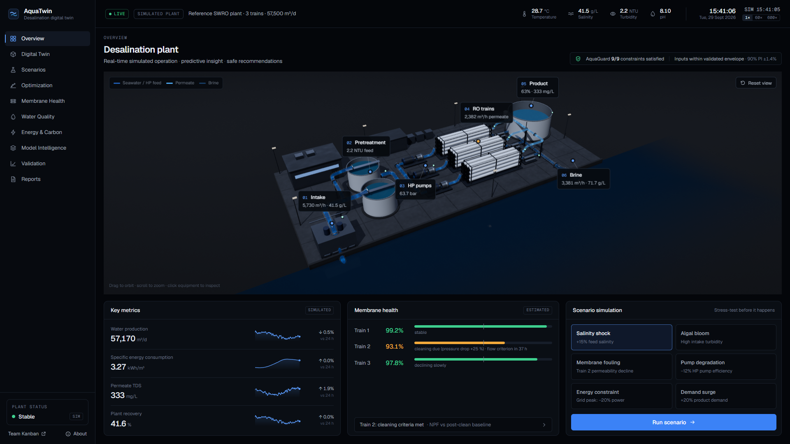
Simulated results on the reference plant (5 seeds), see Section 8.
Seawater reverse osmosis (SWRO) supplies a large and growing share of drinking water in the UAE and the wider Gulf, where seawater is saltier, warmer and more variable than in most of the world. Plants are operated largely on fixed setpoints and fixed alarm thresholds: operators learn that permeate quality is drifting, that a membrane train needs cleaning or that storage is running low when a threshold is crossed. Machine learning could anticipate these events, but black-box models extrapolate silently when conditions leave what they were trained on — exactly when a plant is under stress.
AquaTwin is a digital twin designed around that tension. It keeps a reduced-order physical model of each RO train calibrated to noisy plant telemetry in real time, corrects the model's systematic errors with a machine-learning residual (physics prediction + ML residual = AquaTwin prediction), attaches calibrated uncertainty to every prediction, forecasts membrane fouling, and simulates disturbances 24 hours ahead. An optimiser proposes operating strategies, and a deterministic safety layer, AquaGuard, approves only those that satisfy every hard limit at the edge of the model's uncertainty. When the plant leaves the conditions the model has seen, AquaTwin reports low confidence and withholds its recommendation instead of guessing.
We built a complete working prototype — an 11-page web application with a live 3D twin of a three-train SWRO plant, a Scenario Lab, strategy optimisation, membrane-health analytics, a model-intelligence view and reproducible validation experiments — and evaluated it against a hidden, higher-fidelity plant simulator whose true state is known. Key results (all simulated):
The prototype runs entirely in the browser, is fully reproducible from fixed seeds, and is designed to be connected read-only to a plant historian and run in shadow mode — the next step toward industrial validation.
Desalination is a key source of water in the UAE, particularly for drinking and domestic use; the country's installed desalination capacity was about 7.8 million m³ per day in 2023 [1]. New capacity is predominantly SWRO: the Taweelah plant in Abu Dhabi alone is rated at about 909,000 m³/day [2]. The UAE Water Security Strategy 2036 targets lower demand, higher water productivity and up to two days of national storage capacity [3]. Every hour a large SWRO plant runs off-specification, below demand or towards an unplanned cleaning is a real cost to supply security.
Gulf seawater typically exceeds 39 g/kg salinity [4] and ranges from about 14 °C to above 36 °C at the coast [4, 5]. Higher salinity raises osmotic pressure and energy use; higher temperature raises water flux but also salt passage. SWRO needs about 3.5–4.5 kWh/m³, and about 4 kWh/m³ in the Arabian Gulf including pre- and post-treatment [6, 7]. Disturbances are frequent: brine recirculation, heat events, and harmful algal blooms. During the 2008–2009 bloom in the Gulf of Oman, clogging of granular media filters was identified as a cause of SWRO plant shutdown, and one SWRO plant in the UAE was shut down for more than a week [8].
Plants monitor normalised membrane performance [9, 10] and act when fixed thresholds are crossed: a membrane manufacturer recommends cleaning when normalised permeate flow drops 10 %, salt passage rises 5–10 % or pressure drop rises 10–15 % [10]; a high-conductivity alarm triggers intervention. Thresholds are reactive by construction. Physical models of RO are well established [11] but drift from the real plant as membranes age and foul; purely data-driven models capture plant-specific behaviour but are unreliable outside their training data and give no signal when they are wrong.
Operators need a model that (i) stays true to the specific plant, (ii) sees problems coming, (iii) evaluates responses before they are applied, and (iv) is trustworthy — it must respect hard limits and say when it does not know. AquaTwin is built around these four requirements.
AquaTwin is a decision-support digital twin for SWRO operators. It uses only signals SWRO plants already record — feed pressure and flow, permeate flow and conductivity, pressure drop across the vessels, pump power, seawater salinity, temperature and turbidity — and turns them into five capabilities:
| Capability | What the operator sees |
|---|---|
| Living twin | The plant in 3D and as a process flow; for every train: inputs, physics estimate, measured value, ML residual and final estimate, with a 90 % prediction interval. |
| Membrane health | Normalised permeate flow, salt passage and pressure drop per train; why a train is flagged (observed vs clean expectation vs unexplained loss); time to the cleaning threshold with a confidence band. |
| Scenario Lab | "Stress-test the plant before the plant is stressed": six disturbances simulated 24 h ahead from the live state — no action vs AquaTwin response, hour by hour. |
| Optimisation | 676 candidate operating strategies scored on energy, quality, production, membrane stress and fouling, each screened by AquaGuard; the recommended strategy against the current one. |
| AquaGuard | Every recommendation is APPROVED, REJECTED (with the violated limits) or WITHHELD (low model confidence, operator review required). |
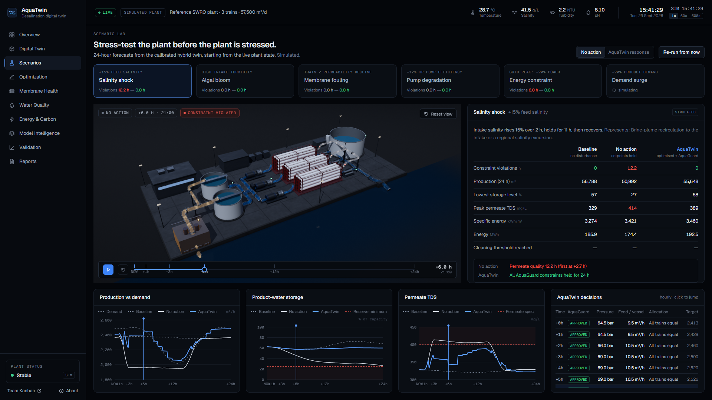
The application is a single-page web app (Next.js, React, TypeScript) with no server-side computation. Two Web Workers run the models: one advances the live plant and the twin once per second, the other computes scenario forecasts, optimisations and diagnostics on demand. The 3D twin is rendered with three.js (WebGL2). The machine-learning models are trained offline in Python (scikit-learn), exported as JSON and evaluated in the browser by a small TypeScript runtime whose predictions match scikit-learn's to within 10⁻⁹. One simulation core is shared by the application, the experiments, the unit tests and the dataset generator, so the numbers on screen, in the experiments and in this report come from the same code.
A digital twin cannot be validated against itself. We therefore built two models of different fidelity:
The two differ deliberately in structure (lumped vs element-level, linear vs non-linear osmotic pressure, salt-transport temperature dependence, energy recovery). That model-form gap is realistic — every engineering model of a real plant has one — and it is what the ML residual must learn. Because the reference plant's true state is known, every claim can be tested exactly.
Each RO train is described by a reduced-order (0D) solution–diffusion model: water flux J = A·TCF(T)·(P − ΔP/2 − P_p − Δπ), log-mean bulk concentration with a constant polarisation factor, salt flux from B, a pressure-drop law and a lumped energy balance with energy recovery. Temperature correction follows the membrane manufacturer [10]. At every sample the model is inverted on the measurements to identify the lumped parameters — water permeability A, salt permeability B, the pressure-drop coefficient and pump efficiency — and these are smoothed with an exponential filter. This mirrors the normalisation practice of ASTM D4516 [9], with the calibrated model replacing empirical correction factors.
A gradient-boosted tree ensemble (scikit-learn HistGradientBoosting, fixed seed, no early stopping) learns the residual between the calibrated physics prediction and the plant for four targets: permeate flow, permeate TDS, vessel pressure drop and RO power. Inputs are the what-if operating point, the calibration point and seawater conditions, the calibrated parameters and the physics outputs. The training data reproduce the operational task: calibrate on six noisy samples at one operating point, predict the plant at another (what-if, normalisation or changed seawater); labels are single noisy measurements. The dataset has 40,000 training, 8,000 calibration and 8,000 test samples inside the envelope (36–48 g/L, 18–36 °C, fouling up to 30 %) and 6,000 test samples outside it. An ML-only model with the same learner, data and budget is the comparison baseline.
Every prediction carries a 90 % interval from split conformal prediction [14], computed separately for near and far what-if extrapolations (Mondrian conformal). The Mahalanobis distance of the current inputs from the training data [15], relative to its 99th percentile, gives a confidence score; if any input leaves its training range, confidence is capped. Below 50 % confidence AquaGuard withholds every recommendation.
Normalised permeate flow, salt passage and pressure drop are computed by querying the calibrated hybrid model at fixed standard conditions and dividing by the post-clean baseline. A lumped fouling model, dφ/dt = κ̂·F·(J/J_ref)²·(1 − φ/φ_max), is fitted on synthetic operating history and used to forecast beyond the data. All three manufacturer cleaning criteria (flow −10 %, salt passage +5–10 %, pressure drop +10–15 % [10]) are checked continuously; the time to the flow criterion is forecast from the recent trend with a 90 % band and a probability of crossing within a horizon. In lead-end biofouling the pressure-drop criterion is typically met first, and AquaTwin reports it as soon as it is.
A production planner converts demand, storage level and any announced power cap into minimum, maximum and target production. The optimiser enumerates 676 strategies (common feed pressure × feed flow per vessel × allocation of the weakest train) and ranks admissible ones by a weighted sum of specific energy, permeate quality, production tracking, membrane stress and fouling rate; weights are editable, but constraints are never traded off. AquaGuard checks 12 hard limits — feed pressure, permeate TDS, recovery, flux, concentrate and feed flow per vessel, vessel pressure drop, motor rating, minimum production, power cap, setpoint ramp and model confidence — at the conservative edge of each prediction interval. Its rules are plain comparisons; nothing in it is learned.
| Component | Implementation |
|---|---|
| Application | Next.js 16, React 19, TypeScript, Tailwind CSS 4; 11 statically prerendered pages; runs offline in the browser |
| Modelling core | Framework-free TypeScript (src/sim), shared by app, experiments, tests and data generation |
| Concurrency | Two Web Workers (live plant at 1 Hz; on-demand compute) with a typed message protocol |
| Machine learning | Python 3.12, scikit-learn 1.9; JSON export; browser runtime verified to 10⁻⁹ |
| 3D twin | three.js r186, WebGL2; procedural plant; GPU flow particles; planar water reflections; ambient occlusion; cinematic first-visit intro; adaptive quality tiers |
| Reproducibility | Fixed seeds throughout; one command regenerates the dataset, models, parity check and all experiments (≈ 10 minutes); rerunning reproduced every artefact bit-for-bit apart from timestamps |
| Quality assurance | 21 unit tests (physics balances, seawater properties, calibration round trip, AquaGuard verdicts, forecasting, ML parity), type checking, lint, automated browser QA of all pages at 1920×1080 and 1440×900 |
On the target hardware class (RTX 5080 Laptop GPU, Chrome, 1920×1080) the 3D pages render at about 180–200 frames per second with the full effect stack; an adaptive governor keeps integrated graphics usable (40–60 fps) by stepping down ambient occlusion, shadow resolution and pixel ratio. We evaluated WebGPU and kept WebGL2: at this frame budget WebGPU would not materially change what users see, and WebGL2 is more stable across laptop graphics drivers.
We asked four questions: (1) does the hybrid predict better than physics or ML alone, inside and outside its training envelope; (2) are its uncertainty estimates honest and does it recognise out-of-envelope conditions; (3) in closed loop, does better prediction reduce constraint violations and at what energy cost; (4) does model-based monitoring warn earlier than conventional alarms?
For (1)–(2) we use the held-out test sets. For (3)–(4) we run 24-hour closed-loop simulations on the reference plant for ten scenarios — normal operation, salinity shock, temperature shock, membrane fouling, pump degradation, sensor degradation, algal bloom, energy constraint, demand surge and a compound extreme outside the envelope — with four methods: fixed operation (setpoints held), and AquaTwin's optimiser and AquaGuard driven by the physics-only, ML-only or hybrid model. Each combination is run with five sensor-noise seeds (200 runs). Decisions are hourly; the plant is simulated in 10-minute steps. Warnings are counted only if they relate to the event they precede. The complete tables are in docs/VALIDATION.md, generated directly from the result files.
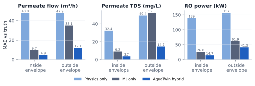
The hybrid is the most accurate model on every target inside the envelope — for permeate flow 4.9 m³/h, close to the 3.0 m³/h noise floor of a single measurement, against 48.0 for calibrated physics and 9.7 for ML alone. Outside the envelope the ML-only model loses most of its advantage (35.1 m³/h), while the hybrid degrades less (12.1 m³/h) because its physics backbone still extrapolates in the right direction.
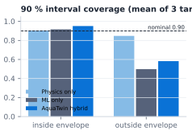
Inside the envelope the intervals cover 90–98 % of outcomes, as designed. Outside it, coverage of the learned models drops sharply (hybrid permeate flow 54 %): the intervals are no longer trustworthy. This is precisely why AquaTwin does not rely on them there. The withhold rule flags 77 % of out-of-envelope samples overall — all salinity and combined excursions and 99 % of temperature excursions — against 0.01 % of in-envelope samples. Heavier-than-seen fouling alone is flagged in only 7 % of cases, because it changes the plant rather than its operating conditions; the health monitoring covers that case.
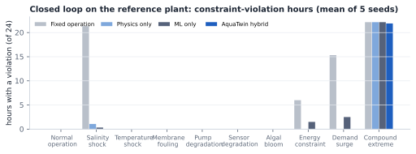
In six of ten scenarios no method violates a constraint — the plant is operated inside a comfortable envelope. Where the disturbance matters, the difference is large: under the salinity shock fixed operation violates the permeate-quality specification for 12.0 h and the storage minimum for 13.2 h (21.3 h in total), physics-only and ML-only closed loops still incur 1.07 h and 0.33 h, and the hybrid none. Under the power cap and the demand surge, fixed operation violates for 6.0 h and 15.3 h; the hybrid for zero hours (ML-only 1.5 h and 2.5 h).
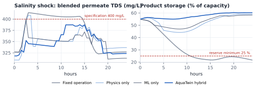
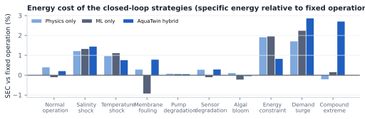
Avoiding violations is not free: the hybrid closed loop uses between 0 % and 2.9 % more energy per cubic metre than fixed operation, most in the demand surge (where it also produces 12 % more water). We do not claim energy savings. In the compound extreme outside the envelope, every method violates constraints for about 22 of 24 hours; AquaTwin withholds its recommendation at 19 of 24 decisions. Abstention limits harm — it prevents confident but wrong recommendations — but it does not solve the problem; a human decision is required.
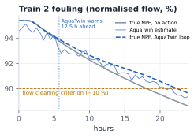
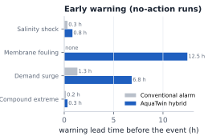
For slow processes the gain is substantial: AquaTwin warns 12.5 h before Train 2 reaches the flow cleaning criterion (−10 %), while conventional alarms (−10 % flow at design pressure, pressure-drop limits) give no warning within the day; it forecasts storage depletion 6.8 h ahead against 1.3 h for a low-level alarm. For fast quality events the gain is minutes (50 min vs 20 min for the salinity shock), because the disturbance ramps within two hours. No false warnings were raised in normal operation by any method. One caveat: in this experiment Train 2 starts with a normalised pressure drop about 20 % above its clean baseline, which already meets the manufacturer's pressure-drop cleaning criterion at t = 0 — AquaTwin reports that immediately, and a plant that tracks normalised pressure drop would already have scheduled cleaning. The lead time above concerns the flow criterion, which fixed alarms on absolute values miss.
The results show that, on a realistic simulated plant with a deliberate model-form gap, a self-calibrating hybrid twin predicts better than either physics or ML alone, recognises most out-of-envelope conditions, prevents constraint violations under several disturbances at a modest energy cost, and gives useful warning of slow degradation. They do not show performance on a real plant: the reference plant is itself a model, the ML residual is trained on data from it, and real plants have phenomena neither model contains. Section 12 lists the limitations.
SDG 6 — clean water and sanitation. AquaTwin targets the reliability and quality of desalinated drinking water (target 6.1) and efficient use of water infrastructure (6.4): fewer hours off-specification or below demand, cleaning planned hours earlier instead of triggered by thresholds, and disturbances rehearsed before they happen. SDG 7 and SDG 13. Energy is a first-class objective, and the Energy & Carbon page makes the trade-off between resilience and energy visible; carbon is shown as an estimate from the UAE average grid intensity [16]. SDG 9. The approach is software-only and uses existing instrumentation, which suits retrofitting existing plants.
UN Water pillars. Under the theme's pillars — Prosperity (reliable supply for cities and economies), Planet (energy-aware operation, earlier and fewer chemical cleanings) and Cooperation (a transparent, auditable tool that operators, engineers and regulators can inspect: every number is labelled by provenance and every recommendation explains its constraints).
UAE context. The Water Security Strategy 2036 emphasises supply security and storage [3]. AquaTwin's planner manages product storage explicitly, pre-filling ahead of announced power-cap windows, and its scenarios cover the Gulf-specific stresses — high salinity, heat and algal blooms — that threaten continuity. Because it is advisory and conservative by design, it is compatible with how critical infrastructure is operated.
The plant configuration (trains, vessels, elements, limits) is data, not code, so the same twin applies to other SWRO trains and plants; each plant gets its own calibrated physics and retrained residual. The architecture extends naturally to a fleet view across plants, to brackish-water RO and nanofiltration (same transport physics, different parameters), and to a central deployment on an edge server feeding many operator screens. The modelling core is framework-free TypeScript and can run on a server as easily as in a browser.
| Phase | Scope | Evidence required to proceed |
|---|---|---|
| 0 — Prototype (done) | Hybrid twin, AquaGuard, Scenario Lab, reproducible validation on a simulator | This report |
| 1 — Historian back-test | Retrain the residual on 12+ months of historian data from a host plant; back-test predictions, health indicators and warnings against recorded events | Accuracy and coverage on held-out months; no missed cleaning events |
| 2 — Shadow mode | Live read-only connection; recommendations logged, not applied; operator feedback loop | Months of agreement analysis; AquaGuard never approving an unsafe strategy |
| 3 — Operator-confirmed advice | Selected recommendations offered for operator confirmation | Measured reduction in off-specification hours or unplanned cleanings |
| 4 — Fleet | Multi-plant deployment, shared model governance | Per-plant validation |
A host utility or plant operator would be needed from Phase 1; no such partnership exists today.
AquaTwin shows that a digital twin for seawater desalination can be accurate, anticipatory and conservative at the same time. Grounding machine learning in a self-calibrating physical model gives better predictions than either alone and fails more gracefully; wrapping every recommendation in deterministic, uncertainty-aware constraints — and abstaining outside the validated envelope — makes the result suitable for the way critical water infrastructure is operated. On a hidden simulated plant it removed constraint violations under salinity, power and demand stresses and warned of membrane fouling half a day ahead, and it told the truth when it could not help. The next step is the one no simulator can replace: a plant historian and a period of shadow operation.
Predict. Simulate. Adapt. Before the plant is forced to react.
The complete, annotated reference list is in docs/REFERENCES.md; model equations and parameter provenance in docs/MODEL.md.
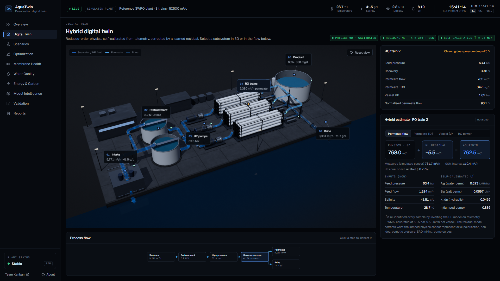
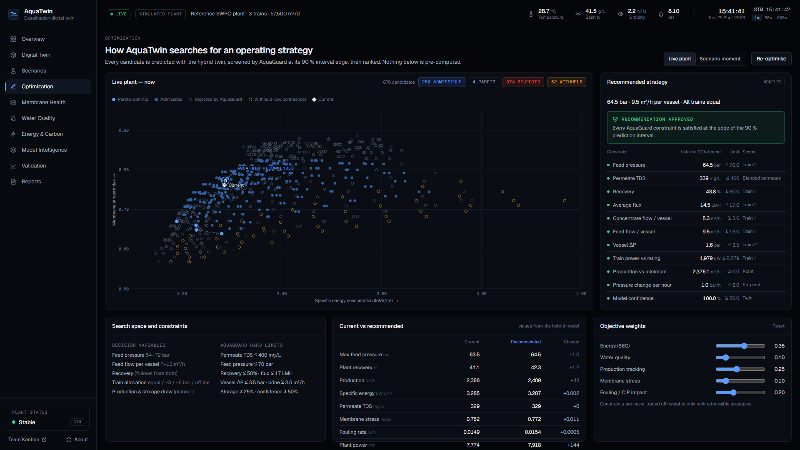
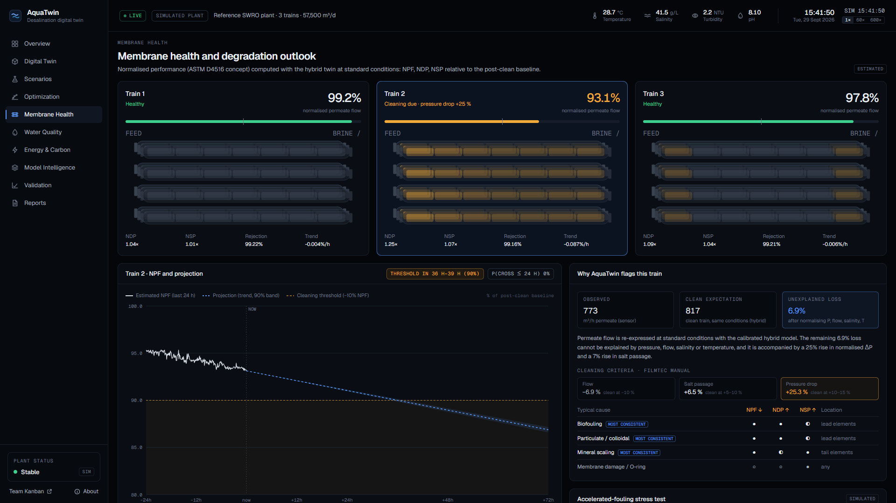
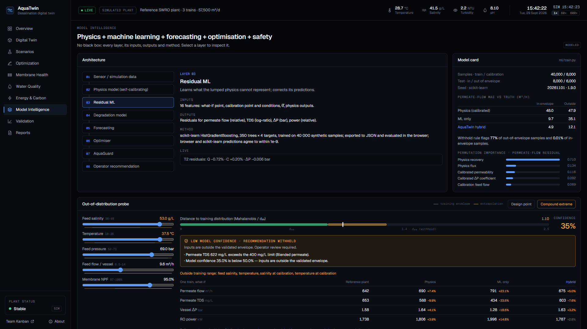
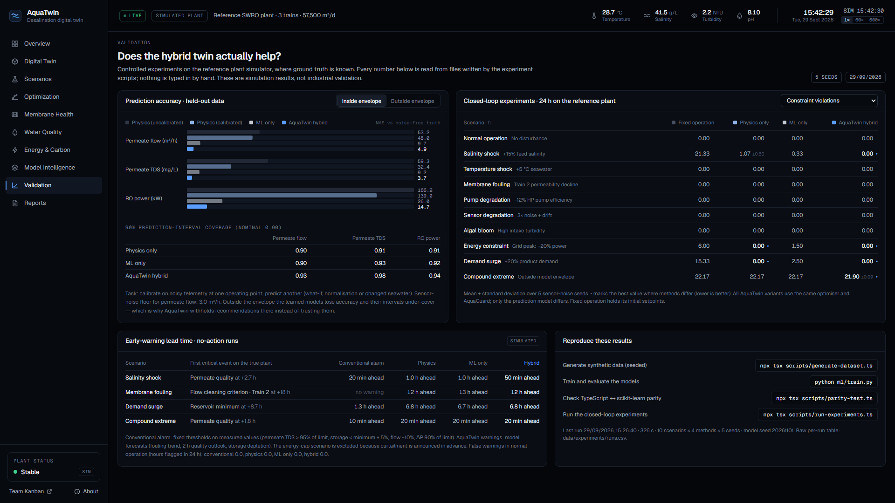
npm install
pip install -r ml/requirements.txt
npm run pipeline # dataset → training → parity check → experiments
python scripts/report/validation_md.py # docs/VALIDATION.md
python scripts/report/figures.py # report figures
python scripts/report/build.py # this report (HTML + PDF)
npm test # unit tests
All steps use fixed seeds (20261101 for data and models; 1–5 for sensor noise). Rerunning the pipeline reproduced the dataset, models, metrics and all 200 closed-loop runs identically apart from timestamps.